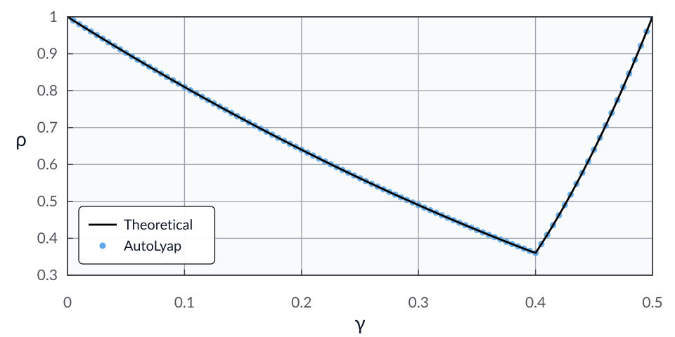

Quick start
This page provides two end-to-end examples:
Iteration-independent analysis with a bisection search on
rho.Iteration-dependent analysis with chained Lyapunov inequalities.
Both examples follow the same modeling pattern and differ mainly in the Lyapunov construction and target metric.
Google Colab
Setup
Install AutoLyap:
pip install autolyap
If you plan to use the MOSEK backend, install the optional MOSEK extra:
pip install "autolyap[mosek]"
Backend notes:
backend="mosek_fusion"is recommended when a MOSEK license is available.backend="cvxpy"is license-free.MOSEK offers free academic licenses: https://www.mosek.com/products/academic-licenses/.
If MOSEK is not licensed in your environment, run the same examples with
backend="cvxpy"(for example, withcvxpy_solver="CLARABEL").The examples below default to
backend="mosek_fusion"and include a CVXPY fallback line.
Workflow at a glance
Most analyses follow four steps:
Build an
InclusionProblemfrom function classes and operator classes.Pick an algorithm or your own subclass of
Algorithm.Select Lyapunov targets with helper constructors.
Solve the SDP and inspect
result["status"]/result["solve_status"], the scalar (rhoorc_Kwhen feasible), andresult["certificate"].
Iteration-independent example: The gradient method
Problem setup
Consider the unconstrained minimization problem
where \(f : \calH \to \reals\) is \(\mu\)-strongly convex and \(L\)-smooth, with \(0 < \mu < L\).
For an initial point \(x^0 \in \calH\) and step size \(0 < \gamma < 2/L\), the gradient update is
In this example, we search for the smallest contraction factor \(\rho\in[0,1)\) provable using AutoLyap such that
where \(x^\star \in \Argmin_{x \in \calH} f(x)\).
Model the problem in AutoLyap and search for the smallest rho
\(f\) is modeled by
SmoothStronglyConvex.The optimization problem is represented by
InclusionProblem.The update rule is represented by
GradientMethod.Distance-to-solution parameters are obtained with
IterationIndependent.LinearConvergence.get_parameters_distance_to_solution.The contraction factor is searched with
IterationIndependent.LinearConvergence.bisection_search_rho.
Run the iteration-independent analysis
from autolyap.algorithms import GradientMethod
from autolyap import SolverOptions
from autolyap.problemclass import InclusionProblem, SmoothStronglyConvex
from autolyap.iteration_independent import IterationIndependent
mu = 1.0
L = 4.0
gamma = 0.2
problem = InclusionProblem([SmoothStronglyConvex(mu, L)])
algorithm = GradientMethod(gamma=gamma)
solver_options = SolverOptions(backend="mosek_fusion") # requires `autolyap[mosek]`
# License-free option:
# solver_options = SolverOptions(backend="cvxpy", cvxpy_solver="CLARABEL")
P, p, T, t = IterationIndependent.LinearConvergence.get_parameters_distance_to_solution(
algorithm
)
result = IterationIndependent.LinearConvergence.bisection_search_rho(
problem,
algorithm,
P,
T,
p=p,
t=t,
S_equals_T=True,
s_equals_t=True,
remove_C3=True,
solver_options=solver_options,
)
if result["status"] != "feasible":
raise RuntimeError("No feasible Lyapunov certificate in the requested rho interval.")
rho = result["rho"]
certificate = result["certificate"]
rho_theory_value = max(abs(1.0 - gamma * L), abs(1.0 - gamma * mu)) ** 2
print(f"rho (AutoLyap): {rho:.8f}")
print(f"rho (theory): {rho_theory_value:.8f}")
The computed value rho (AutoLyap) matches (up to solver numerical
tolerances) the theoretical rate expression for gradient methods; see
[Pol63]:
where \(x^\star \in \Argmin_{x \in \calH} f(x)\).
Equivalently,
Sweeping over 100 values of \(\gamma\) up to \(2/L\) gives the plot below, with the endpoint included as the limiting \(\rho=1\) reference, the theoretical rate in black, and AutoLyap certificates as blue dots.
{kind=link}

Iteration-dependent example: The optimized gradient method
Problem setup
For background on the optimized gradient method, see [KF15].
Consider the unconstrained minimization problem
where \(f : \calH \to \reals\) is convex and \(L\)-smooth with \(L>0\).
For initial points \(x^0, y^0 \in \calH\) and iteration budget \(K \in \mathbb{N}\), the optimized gradient method updates as
In this example, we search for the smallest AutoLyap certificate constant \(c_K\) such that
where \(x^\star \in \Argmin_{x \in \calH} f(x)\).
Model the problem in AutoLyap and search for the smallest c_K
\(f\) is modeled by
SmoothConvex.The optimization problem is represented by
InclusionProblem.The update rule is represented by
OptimizedGradientMethod.Initial-horizon parameters are obtained with
IterationDependent.get_parameters_distance_to_solution.Final-horizon function-value parameters are obtained with
IterationDependent.get_parameters_function_value_suboptimality.The certificate constant is computed with
IterationDependent.search_lyapunov.
Run the iteration-dependent analysis
from autolyap.algorithms import OptimizedGradientMethod
from autolyap import SolverOptions
from autolyap.problemclass import InclusionProblem, SmoothConvex
from autolyap.iteration_dependent import IterationDependent
L = 1.0
K = 5
problem = InclusionProblem([SmoothConvex(L)])
algorithm = OptimizedGradientMethod(L=L, K=K)
solver_options = SolverOptions(backend="mosek_fusion") # requires `autolyap[mosek]`
# License-free option:
# solver_options = SolverOptions(backend="cvxpy", cvxpy_solver="CLARABEL")
Q_0, q_0 = IterationDependent.get_parameters_distance_to_solution(
algorithm,
0,
i=1,
j=1,
)
Q_K, q_K = IterationDependent.get_parameters_function_value_suboptimality(
algorithm,
K,
)
result = IterationDependent.search_lyapunov(
problem,
algorithm,
K,
Q_0,
Q_K,
q_0=q_0,
q_K=q_K,
solver_options=solver_options,
)
if result["status"] != "feasible":
raise RuntimeError("No feasible chained Lyapunov certificate for this setup.")
c_K = result["c_K"]
certificate = result["certificate"]
Q_sequence = certificate["Q_sequence"] # [Q_0, Q_1, ..., Q_K]
q_sequence = certificate["q_sequence"] # [q_0, q_1, ..., q_K] or None
theta_K = algorithm.compute_theta(K, K)
c_K_theory_value = L / (2.0 * theta_K ** 2)
print(f"c_K (AutoLyap): {c_K:.6e}")
print(f"c_K (theory): {c_K_theory_value:.6e}")
The computed value c_K (AutoLyap) matches (up to solver numerical
tolerances) the theoretical horizon-K expression:
where \(x^\star \in \Argmin_{x \in \calH} f(x)\).
In particular,
Sweeping over \(K \in \llbracket 1, 100\rrbracket\) gives the plot below, with the theoretical bound in black and AutoLyap certificates as blue dots.

What to inspect
status: one offeasible,infeasible, ornot_solved.solve_status: backend-specific raw solver status (orsolver_error/optimize_error).rho(iteration-independent) orc_K(iteration-dependent): the main scalar output.certificate: Matrices and vectors that parameterize the Lyapunov certificate.
Verbosity diagnostics
All three SDP entry points support a verbosity argument:
Set:
verbosity=1for concise diagnostic summaries (default).verbosity=0for silent mode.verbosity=2for detailed per-constraint/per-iteration diagnostics.
The diagnostic summary reports:
nonnegativity checks on constrained scalars,
PSD checks via minimum eigenvalues of constrained matrices,
equality-constraint residuals (
max_abs_residualandl2_residual).
Example:
result = IterationIndependent.search_lyapunov(
problem,
algorithm,
P,
T,
p=p,
t=t,
rho=1.0,
solver_options=solver_options,
verbosity=1, # or 2 for detailed diagnostics
)
Next
For theoretical foundations, see Theory.
For more worked walkthroughs, see Examples.
For the full API, see API reference.
References
Donghwan Kim and Jeffrey A. Fessler. Optimized first-order methods for smooth convex minimization. Mathematical Programming, 159(1-2):81–107, October 2015. doi:10.1007/s10107-015-0949-3.
B. T. Polyak. Gradient methods for the minimisation of functionals. USSR Computational Mathematics and Mathematical Physics, 3(4):864–878, 1963. doi:10.1016/0041-5553(63)90382-3.